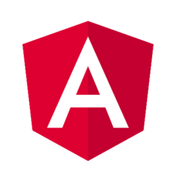
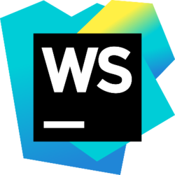

Subject
The subject of the project was to develop a weekly tracking table in web format from a logistics database where the data was stored in an Excel file.
The aim was to create a graphical GUI of the monitoring table that will allow to report the activities of Maintenance in Operational Condition of some electronic modules used in nuclear power plants.
It was therefore necessary to graphically represent important information in order to improve and facilitate the analysis of data over a year and to assist in decision making.
Technologies used
Node Js

Angular

Webstorm
Server part
Finally, I created a Rest API with Node Js to retrieve the data from the Excel file in CSV format and send it directly to the Angular application.